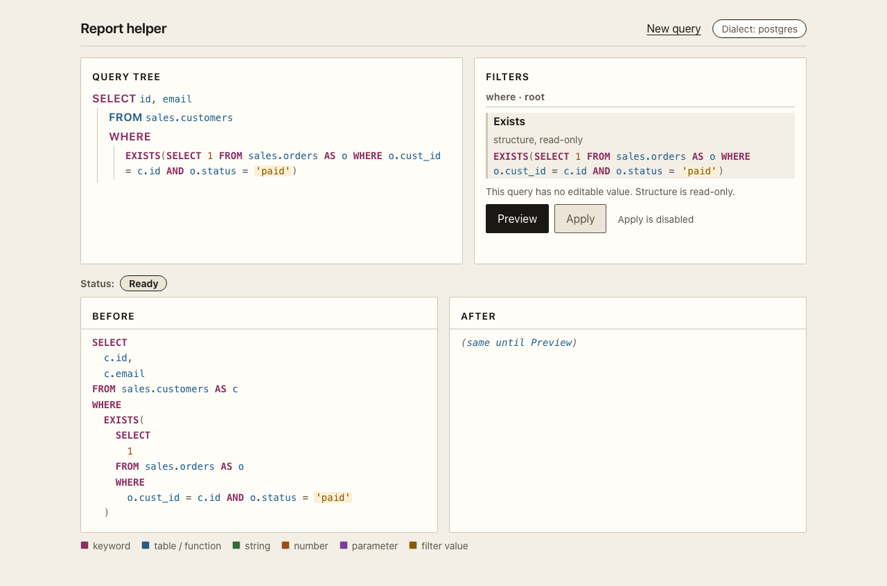
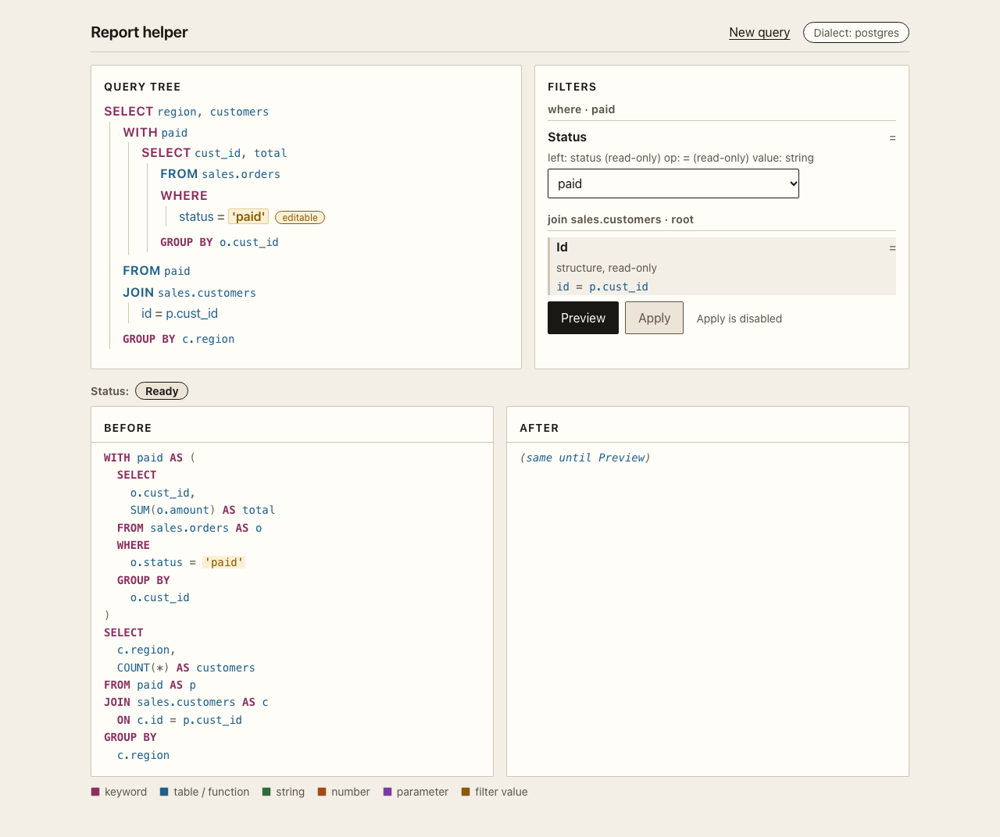
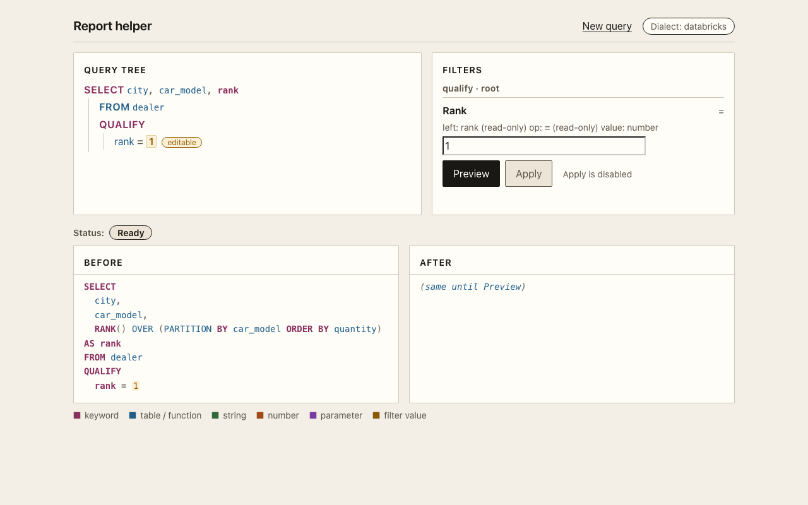
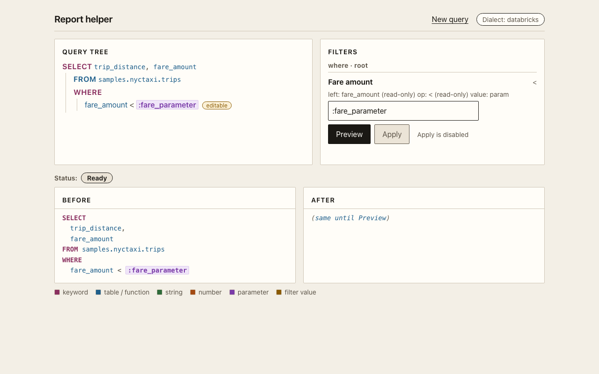
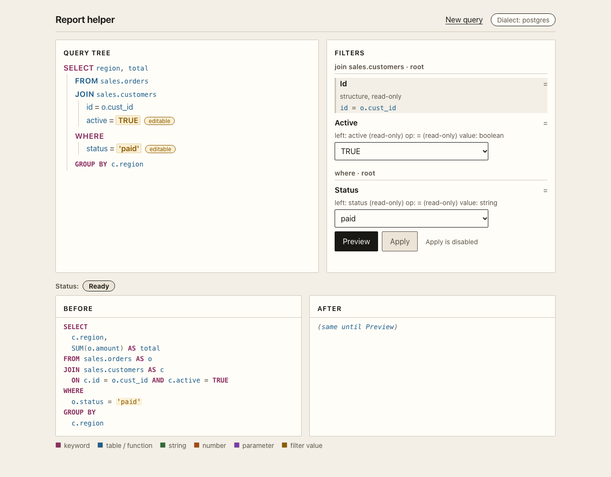
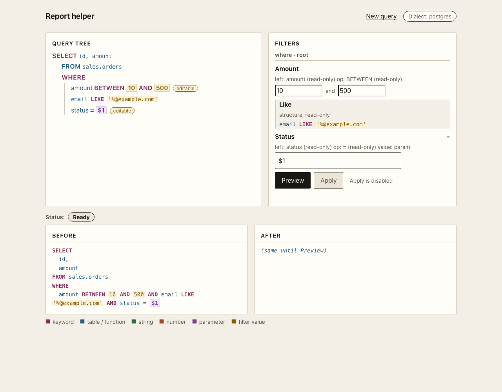

Simple filter
SELECT cust_id, status, amount
FROM sales.orders
WHERE status = 'paid'33 statements. 19 in Postgres, 14 in Databricks. Every entry parses, resolves, round-trips, and projects to the product IR. A test enforces that.
The same list drives the example picker in the report helper. Open the app
with make dev and pick an entry. The filter panel fills itself from
the statement.

EXISTS. The inner predicate reads
sales.customers.id from the outer scope.
where · paid.
QUALIFY. The rank predicate is editable on
Databricks and refused on Postgres.
The filter panel is not a fixed form. It walks the product IR and builds one row per predicate. A literal value gets a typed control. A comparison between two columns becomes a read-only row, because a value patch would change the meaning.


LIKE, and a parameter field in
one clause.SELECT cust_id, status, amount
FROM sales.orders
WHERE status = 'paid'SELECT c.region, SUM(o.amount) AS total
FROM sales.orders o
JOIN sales.customers c ON c.id = o.cust_id AND c.active = TRUE
WHERE o.status = 'paid'
GROUP BY c.regionSELECT id, cust_id, amount, region
FROM sales.orders
WHERE status = 'paid'
AND amount BETWEEN 100 AND 500
AND region IN ('EU', 'US')SELECT c.id, c.email
FROM sales.customers c
LEFT JOIN sales.orders o ON o.cust_id = c.id
WHERE o.id IS NULLSELECT o.id, c.email, p.method, p.amount
FROM sales.orders o
JOIN sales.customers c ON c.id = o.cust_id
JOIN sales.payments p ON p.order_id = o.id AND p.amount > 0
WHERE c.region IN ('EU', 'US')SELECT curr.id, prev.id AS previous_id
FROM sales.orders curr
LEFT JOIN sales.orders prev
ON prev.cust_id = curr.cust_id AND prev.created_at < curr.created_at
WHERE curr.status = 'open'SELECT c.id, c.email
FROM sales.customers c
WHERE EXISTS (
SELECT 1 FROM sales.orders o
WHERE o.cust_id = c.id AND o.status = 'paid'
)SELECT c.id
FROM sales.customers c
WHERE NOT EXISTS (
SELECT 1 FROM sales.orders o
WHERE o.cust_id = c.id AND o.amount > 500
)SELECT o.id, o.amount,
(SELECT MAX(p.amount) FROM sales.payments p WHERE p.order_id = o.id) AS largest_payment
FROM sales.orders o
WHERE o.amount > 50SELECT c.id
FROM sales.customers c
WHERE c.region IN (
SELECT r.code FROM sales.regions r WHERE r.active
)SELECT t.cust_id, t.total
FROM (
SELECT o.cust_id, SUM(o.amount) AS total
FROM sales.orders o
GROUP BY o.cust_id
) t
WHERE t.total > 1000WITH paid AS (
SELECT o.cust_id, SUM(o.amount) AS total
FROM sales.orders o
WHERE o.status = 'paid'
GROUP BY o.cust_id
)
SELECT c.region, COUNT(*) AS customers
FROM paid p
JOIN sales.customers c ON c.id = p.cust_id
GROUP BY c.regionWITH paid AS (
SELECT cust_id, SUM(amount) AS total FROM sales.orders
WHERE status = 'paid' GROUP BY cust_id
),
big AS (
SELECT cust_id FROM paid WHERE total > 1000
)
SELECT c.id, c.email
FROM sales.customers c
JOIN big b ON b.cust_id = c.id
WHERE c.activeWITH RECURSIVE tree AS (
SELECT id, manager_id, 1 AS depth
FROM hr.employees
WHERE manager_id IS NULL
UNION ALL
SELECT e.id, e.manager_id, t.depth + 1
FROM hr.employees e
JOIN tree t ON e.manager_id = t.id
)
SELECT id, depth FROM tree WHERE depth < 5SELECT id, cust_id, amount
FROM (
SELECT id, cust_id, amount,
ROW_NUMBER() OVER (PARTITION BY cust_id ORDER BY amount DESC) AS rn
FROM sales.orders
) ranked
WHERE rn = 1SELECT cust_id FROM sales.orders WHERE status = 'paid'
UNION
SELECT cust_id FROM sales.refunds WHERE settledSELECT id, amount
FROM sales.orders
WHERE amount BETWEEN 10 AND 500
AND email LIKE '%@example.com'
AND status = $1SELECT DISTINCT ON (cust_id) cust_id, id, created_at
FROM sales.orders
ORDER BY cust_id, created_at DESCSELECT c.id, top.id AS order_id, top.amount
FROM sales.customers c
JOIN LATERAL (
SELECT o.id, o.amount FROM sales.orders o
WHERE o.cust_id = c.id
ORDER BY o.amount DESC
LIMIT 3
) top ON TRUE
WHERE c.region = 'EU'SELECT cust_id, status, amount
FROM sales.orders
WHERE status = 'paid'SELECT city, car_model, quantity
FROM dealer
QUALIFY RANK() OVER (PARTITION BY car_model ORDER BY quantity) = 1SELECT city, car_model,
RANK() OVER (PARTITION BY car_model ORDER BY quantity) AS rank
FROM dealer
QUALIFY rank = 1SELECT o.id, o.amount
FROM sales.orders o
LEFT SEMI JOIN sales.customers c ON c.id = o.cust_id
WHERE o.status = 'paid'SELECT c.id
FROM sales.customers c
LEFT ANTI JOIN sales.orders o ON o.cust_id = c.idWITH recent AS (
SELECT cust_id, id, amount, created_at
FROM sales.orders
WHERE created_at >= '2026-01-01'
)
SELECT cust_id, id, amount
FROM recent
QUALIFY ROW_NUMBER() OVER (PARTITION BY cust_id ORDER BY created_at DESC) = 1WITH RECURSIVE t(n) AS (
SELECT 1
UNION ALL
SELECT n + 1 FROM t WHERE n < 5
)
MAX RECURSION LEVEL 10
SELECT * FROM tSELECT trip_distance, fare_amount
FROM samples.nyctaxi.trips
WHERE fare_amount < :fare_parameterSELECT current_timestamp() + ?, ? * ? AS squareSELECT c.id, t.total
FROM sales.customers c
JOIN (
SELECT cust_id, SUM(amount) AS total
FROM sales.orders
GROUP BY cust_id
) t ON t.cust_id = c.id
WHERE t.total > 100SELECT c.id
FROM sales.customers c
WHERE EXISTS (
SELECT 1 FROM sales.orders o WHERE o.cust_id = c.id
)WITH base AS (
SELECT cust_id, amount, status FROM sales.orders
),
paid AS (
SELECT cust_id, SUM(amount) AS total FROM base WHERE status = 'paid' GROUP BY cust_id
),
top AS (
SELECT cust_id, total FROM paid WHERE total > 500
)
SELECT c.id, top.total
FROM sales.customers c
JOIN top ON top.cust_id = c.idSELECT id, created_at
FROM sales.orders
WHERE status = 'open'
ORDER BY created_at DESC
LIMIT 25SELECT id, amount
FROM sales.orders
WHERE amount BETWEEN 10 AND 250
AND status = 'paid'
LIMIT 10Building something with SQL? Tell Raphael about it.
Connect on LinkedIn